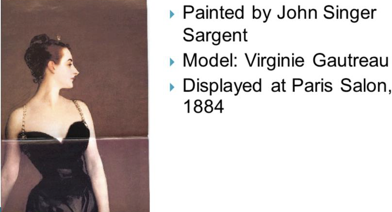
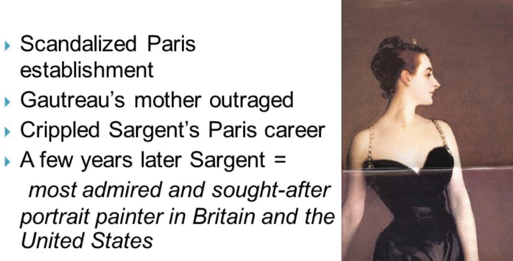
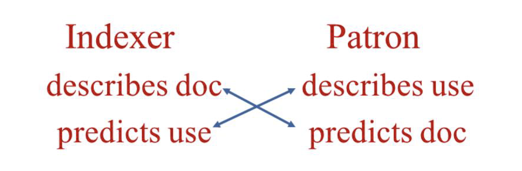
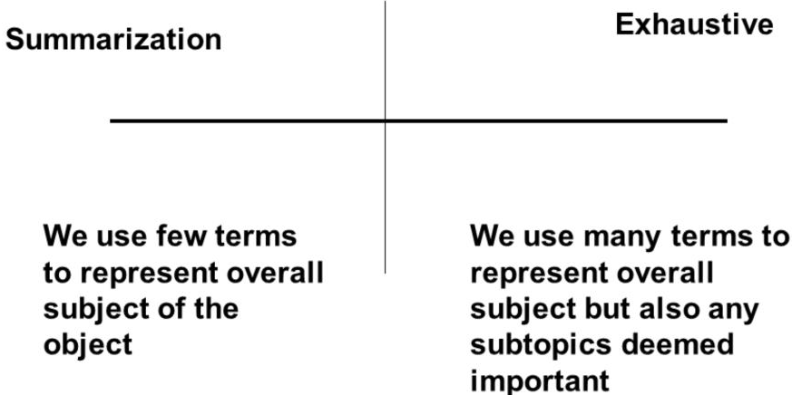

Representation Issues in IR Systems
LIS 4/5523: Online Information Retrieval
Introduction
Recap
In Part 1, we looked at information systems and database structures. We also addressed representation and indexing from the data modeling and technical side
In this lecture, Part 2, we are going to look at representation and indexing from the human/creator and retrieval side
- Indexing as process and effects related to human indexing
- Effects of indexing decisions on retrieval
Information Retrieval
- The central problem of IR is how to represent documents for retrieval
- To be more successful, document representation must be used in ways similar to the ways ordinary language is used
- document representations should take context into account
- document representations should take users into account
In Library IR Systems
Descriptive Data- We use MARC records and MARC record encoding standard to hold the bibliographic indexing of the objects
- We use RDA (Resource Description and Access) content standard
Subject Representation- We use 6XX fields in the MARC record structure
- We use subject headings list, thesauri (controlled vocabularies) to construct subject indexing
- We use classification systems (eg. Library of Congress Classification, Dewey Decimal Classification) to assign classification codes
Other IR Systems
- Digital libraries/institutional repositories
- Use metadata schemes like Dublin Core, Darwin Core, MODS, METS, etc
- Online databases
- Follow ANSI/NISO standards for field structures in databases
- Follow ANSI/NISO standards for content standards–related to controlled vocabulary use in databases
- Web??
Representation
Definition
A system for choosing or highlighting some characteristics (attributes), together with a specification of the rules for selection (code)
This implies a tradeoff – if some characteristics are highlighted, other characteristics are left behind
More Definitions
ENTITIES: objects or conceptsATTRIBUTES: characteristics of entitiesDIACHRONIC Attribute: stable across timeSYNCHRONIC Attribute: changes across time
Diachronic Attributes
Synchronic Attributes
Human Indexing
- Diachronic attributes (don’t change)
author, title, publisher, number of pages
- Synchronic attributes (change with time, context)
- eg. meaning/uses of words over time
- Rules not evident to users
What is Subject Analysis?
Definition
Determining intellectual content or subject content or aboutness
Types
Document Analysis: information professional (cataloger, indexer) studies document to determine document surrogate for systemQuery Analysis: information professional (intermediary) or end-user studies user request to determine search terms
Purpose of Subject Analysis
- Clarify and organize subjects of docs and queries
- Express subjects precisely
- Achieve consistency between document and search terms
The How of Subject Analysis
Familiarization: Acquainting oneself with general content of document and queryExtraction: Identifying pulling out significant concepts and natural- langugage termsTranslation: Converting extracted terms into controlled vocabulary of systemFormalization: Applying rules for exact format, spelling, punctuation, codes, etc. for input to system
The How of Subject Analysis
Subject analysis is a dance….
based on
literary warrant(information objects/author’s intentions) and onuser warrant(user needs)requiring evaluation and verification at every stage in a continuous, iterative process
The When of Subject Analyis
During production of primary document
Author's abstract and/or index Indexing commissioned by publisher Cataloging in publication (CIP)Prior to storage for retrieval
Cataloging or indexing by bibliographic utility Cataloging or indexing by individual libraryDuring information retrieval
Problem statement or question from user Query formulation by intermediary or user
Indexing
Indexing
Process of creating index for purpose of representing and providing access to information objects
May be performed by humans or computers
Index Entry
Any pointer or indicator included in an index
Index Entry and Term
Index Term
Any word/phrase used for physical or subject description
Any word/phrase used to search for and retrieve document
May describe any attribute of document (author, title, year, subject, etc.)
Guessing Game
Indexing Factors Affecting IR Performance
| Indexing | Consistency Subject expertise Indexing experience |
| Types of Knowledge | Search Experience System Knowledge Domain Knowledge |
| Affective/Cognitive | Motivation Level Emotional State |
Indexing Factors Affecting IR Performance
System Factors
| Index Language | Specificity Level of coordination |
| Indexing Assignment | Exhaustivity Specificity of term Accuracy |
Considerations when Choosing Terms
- Attributes of documents and users
- Record field that will contain the data
- out of several potential kinds of subject fields
- Domain
- Scope
- Specificity
- Exhaustivity
Domain and Scope
Domain: overall subject, topic, discipline, or theme
Scope: Extent or limitations of domain
Considerations
- Breadth and complexity of subject area/discipline
- Users’ vocabulary level
- Terminology used in documents
Specificity and Exhaustivity
Specificity: extent to which index terms precisely represent the subject of the document. Can be general or more specific.
Exhaustivity: extent to which indexing represents all concepts in a document.
Considerations
► Level and complexity of terms in subject area/ discipline
► Users’ vocabulary level
► Terminology used in documents
Example
► Specificity is high if detailed math topics covered, e.g., set operations
► Exhaustivity is high if all math operations in textbook covered
A closer look: Exhaustivity
Recall
RECALL= Relevant Documents in a IR Set/All relevant documents in the database
A measure of how good a system is at retrieving all the relevant documents
Inversely related to precision
Dependent upon the users expectations and objectives
Difficult to estimate. Need to know the number of relevant documents in the entire collection
Precision
PRECISION = Relevant documents in a retrieved set/All documents in the retrieved set
- Measures how good the system is at “not” retrieving non-relevant documents
- Dependent upon user’s expectations and objectives
Effects on Precision/Recall
Higher specificity means higher P or R? and lower P or R?
Higher exhaustivity means higher P or R? and lower P or R?
How do users information needs/expectations fit in?
Putting it all together
- Subject representation must take into account:
- Users and their information seeking/needs
- Understanding of the changing nature of language
- DIACHRONIC, SYNCHRONIC ATTRIBUTES
- CULTURAL/GENDER ISSUES
- NEW WORDS IN CURRENT USE
- Author’s intentions
- Subject(s) covered
- Biases? Perspectives? Place within larger body of knowledge
- Standards for creation of indexes/abstracts
- Tools for term selection
- Indexer’s experience/domain/system knowledge